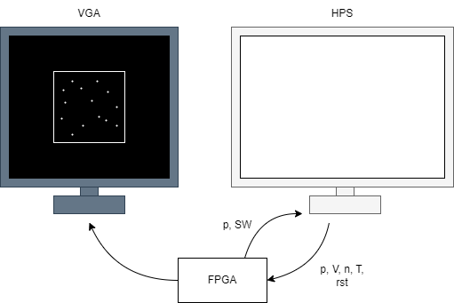
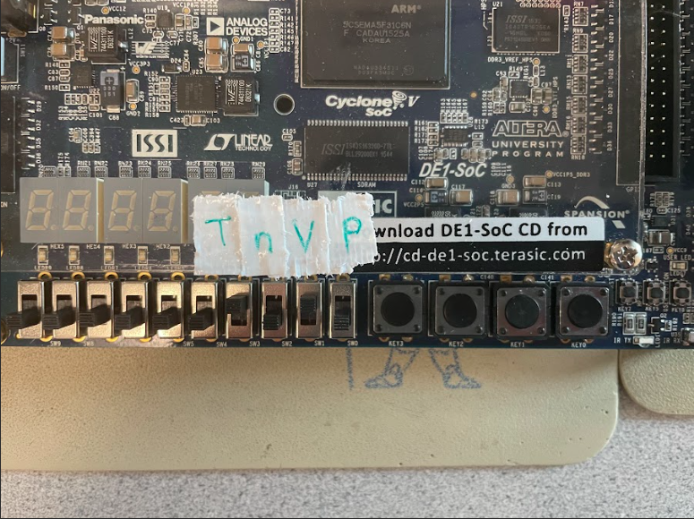

FPGA Gas Simulator
Anya Prabowo and Sarah Ellenbogen
Demonstration Video
Introduction
Our project aimed to simulate gas particles that follow the ideal gas laws, implemented on the FPGA.
The gas simulation was done by representing particles with pixels that are printed on the VGA display, with collisions between particles being represented to follow the ideal gas laws. Several parameters were varied (pressure, volume of box, number of particles, and temperature) and observed the effects on the behavior of the particles.
We decided to simulate gas particles because we wanted to design a project that related to real life physics concepts, and thought that a visual representation of these concepts would be interesting.
High Level Design
The gas particles are represented on the VGA display, moving around and colliding with one another as well as colliding with a box that they are bound in.
Ideal Gas Law
To determine how we wanted the particles to behave, we started off with analyzing the ideal gas laws to scope the extent of our project.
where p = pressure, V = volume, n = amount of substance, R = ideal gas constant, T = temperature
Pressure is represented by the number of collisions there are with the walls of the box over a period of time.
Using the pressure equation, we know that this is proportional to the force on the area (box). Force is calculated by taking the delta momentum over delta time, and momentum is proportional to the velocity of a particle. For constant velocity, the momentum of all particles would be constant since we keep mass constant, and the force would be directly proportional to the number of particles colliding with the wall at a given time. For a constant box size, pressure would be directly proportional to the force applied on the box. As a result, we can say that pressure is directly proportional to the number of particles colliding with the wall over a period of time.
Temperature is represented by the speed of the particles.
P = F/A can be rewritten as shown below.
The ideal gas equation can be rewritten as shown below.
Combining these two equations gives us the following equation
that related temperature and the average squared speed of the gas particles. Since we set mass and speed to be constant amongst all the particles, we can conclude that temperature is directly proportional to the speed of a particle.
Volume is represented by the size of the box that the gas particles are in and amount of substance is represented by the number of particles on the screen.
Logical Structure
The overall structure of the design is portrayed in the diagram above. A user would input their choice of parameter values, and those get sent to the FPGA which is constantly calculating the next position of each particle. With these new parameters, it would adjust accordingly how it would calculate the new position (speed), or change any other visual representation (box size or number of particles). Explained in detail in the hardware section, the FPGA would do the relevant calculations to determine the particle location, and draw this on the VGA along with the outline of the box that bounds the particles and erasing the previous particle.
Hardware
Calculation (Particle) Module
We started off by writing a module to update the position of a single particle inside of a 2D box based on its current position and velocity, as well as the current size of the box. We based the velocity equations off of those from the boids lab in 4760. Given the position is in pixels and the velocity is in pixels per cycle, the update of the position every cycle is x = x0 + v. If the position of the particle at the next time step falls outside of the box, we reverse the velocity and calculate the position for the next time using the updated velocity. We reverse the particle before it hits the wall because it avoids the issue of tunneling, where the particle falls outside of the box before reversing. We also increment a hit counter in the module if we detect a collision and reverse a particle for future pressure calculations.
State Machine
The next step was to update the position of many particles within a certain time step. This required registers to store the current x and y position of the particle, in VGA coordinates, and the current x and y velocities in pixels/frame. We also needed a single wire to hold the box size, which was the same for all particles, as well as a single wire to keep track of the hit count. At first we created many of the particle position update modules in parallel using a generate statement, which were connected to each of the registers through wire arrays the same size of the registers. We were still sequentially reading the outputs of these modules since we could only write one pixel to VGA memory at once. Due to this we realized we did not need to create all of this hardware in parallel. Instead we created a single wire connected to a module and we would change which registers these wires were connected to based on what particle we wanted to update. We did not waste any cycles through changing this register as we connected the wire to the register in the cycle we were reading it for the previous particle position and writing it to the VGA, so in the next cycle it would have the updated position for the current particle. We kept track of the current particle through an index register that counted up to the number of particles.
Timing was not an issue for us even as we scaled up the number of particles, and even at the smallest particle speed of 1 pixel/sec, the particles were moving very quickly across the screen. Due to this we added a configurable delay between updates of the state machine, which also aided in debugging. The state machine stays in the wait state until the set number of cycles has passed and then returns to the beginning of the state machine to update the position of the particles once again. Here we also increment a time step counter to keep track of how many loops through the state machine we have done. We were not seeing large enough pressure/collision number values that we could compare when only looking at one update of the state machine, so we decided to look at the number of collisions every 100 updates of the state machine. To do this we only change the value on the hits_pio wire once the time step counter hits 100 and then we reset the time step counter.
We also wanted to simulate some randomness in the initial positions of the particles, so we used a LFSR (linear feedback shift register) that was sequentially read for all of the particles. It is important to note that this is not pure random, and can be predicted if the algorithm is known. The module only needs to be reset once upon overall reset and then can be read every 13 cycles as it performs 13 shifts. We needed to modify the shift register to add a done signal to know when these 13 shifts have been successfully performed and we can read the output of the module. The instantiation state is only run once upon reset. We first instantiate the x position for all of the particles one at a time using an index counter. The LFSR returns a 13-bit value, but we ensure that the particles are spawned inside the box by masking the values based on the box size and shifting them to the center of the VGA ( 320 pixels - half the box size ). We were initially modding the output of the LFSR to get the values within the specific range of the box size, but realized this was using too much logic and we could get similar, but less exact results with masking. We then initialize the y values one at a time in the same manner and then the velocity values to one of 4 options based on the output of the LFSR (vx = -1 and vy = 0, vx = 1 and vy = 0, vx = 0 and vy = -1, vx = 0 and vy = 1). Since we were simulating collisions according to the HPP model, as will be discussed in the next section, our particles were moving in one of four directions, up, down, left and right. Also since we are assuming there is a constant temperature throughout the box and each particle is of the same element, they will all have the same speed, which we start at 1 pixel/frame.
Collision Detection
Once we were able to simulate many particles moving around together, interacting with the sides of the box, we needed to implement collision detection and logic between each of the particles. To cover comparisons between each particle we loop through each particle and compare it to each particle with a higher index than itself. Since in our final design each particle only occupies one pixel we simply compare the current x and y positions of both particles and if they overlap we then move into the collision logic, to change the velocities, which in turn changes the direction of movement.
Since we are following the HPP collision model and the particles can only move in 1 of 4 directions, there are a limited number of ways the particles can collide in terms of their respective velocities, more specifically 16 combinations. We created a case statement to handle the variety of combinations that uses the velocity of both particles as an input.
VGA
The VGA driver avoids bus transactions by writing directly to memory that is read by the VGA screen. Since we were not limited in timing we decided not to parallelize the VGA reads from memory with multiple M10k blocks. To draw on the VGA we write an 8-bit color to memory at an address corresponding to the desired pixel.
Simulating the particle movements on the VGA required drawing the particles at the updated positions, while simultaneously erasing them at their previous positions. We again did this sequentially since we could only write one pixel to VGA memory at once, as we only had one memory block that the VGA was reading from. We again did this by keeping a running index of the current particle until we reached the total number of particles. Before updating the position of the particle we draw the old position, in terms of VGA coordinates black. One cycle after we connect the wire of the current particle to the update module we read the output of the module and then write white to the new position of the particle.
While we update the position of the particles and redraw them with every loop of the state machine, we only clear the screen and redraw the box on reset, which occurs in the first few states. This is so the user can change the size of the box at runtime. We again clear the screen and draw the box one pixel at a time. For clearing the screen we loop through each pixel in a single row and draw it black, and once we reach the end of the row we increment the y pixel counter until we have cleared every row. For drawing the box, we have a state for each side of the box starting with the top side. Since the box size is square and in pixels we calculate the x or y coordinate to keep constant for that side, and then draw for the number of pixels updating the other coordinate.
PIO Ports and Interaction with HPS
To make the parameters of the simulation, consisting of velocity, box size, and number of particles, customizable at run time as well as to send pressure data to the HPS we added several PIO ports to the Qsys bus. The pressure value on the PIO port changes after a specific number of increments of the time step counter as described above. When we change the number of particles, as well as the box size, we simply reset the state machine and initialization occurs with the new values. The challenge came with changing the velocity without restarting the simulation. We solved this issue by examining the sign of the current velocity registers during the wait state and changing the speed of the particles according to the value on the PIO port while maintaining the sign.
Software
On the HPS, this is where the user can change parameter values. Since there are 4 parameters that can vary in value, we decided that 2 of these parameters must remain constant as the other 2 are changed. Once this is set, between the two parameters that are changed, one is to be set by the user, and the other will get adjusted. Below is an example:
Constant parameters: pressure and temperature
User changes: volume
Adjusted parameter: number of particles
What the user will see after they set a new volume is that the box size will change immediately, and because of that the pressure will also change. Since pressure is one of the constant parameters, we want to adjust the number of particles to change the pressure to its original value. This is done by slowly changing the number of particles until the pressure we calculate is similar to original pressure.
The first step is to allow the user to set which parameter should be kept constant, and which should be variable. This could be done on the HPS by asking the user to choose which parameters to keep constant on the command line, but this would require many nested loops when scanning for the user input. Instead, we chose to use the switches on the FPGA to allow users to flip the switch to indicate that those are the parameters that they want to change. The values of the switches are sent over to the HPS over PIO ports so that it knows which case statement to go to when a user wants to change parameters.
Once they have set 2 parameters to change, the command line waits for the user to input what they want to do next. They can either print the current parameter values (0), or change parameters (1). Below is what the output looks like when a user wants to print the current parameters.
This gives us insight on the scale of the values of each parameter before we set a number to change one of the parameters.
The image above shows a user changing pressure, and the volume adjusting accordingly. After inputting the pressure, this is the new pressure goal that the system must reach. We adjust the volume slightly, then measure the pressure from the system. This takes a while because we want to be able to detect enough collisions when the system is somewhat more stable. Once we get the pressure, this is sent over a PIO port to the HPS and we determine whether we need to further change the volume if the pressure is still off, or stop changing when the pressure is +-10 from the pressure goal. In this case, we decreased the pressure from 226 to 200, which means the system needs to increase the volume to achieve this pressure goal. We increase the box size by 10 incrementally until we reach a pressure value of 193 which is within +-10 of 200.
One issue that we were facing was that for some parameters, e.g. temperature (speed), even though we were only adjusting the speed by 1, this would cause the pressure to increase or decrease by large values. This results in situations where the system would oscillate between two speed values, trying to get to the pressure goal but never hitting it because it overshoots, then undershoots, then overshoots again. In order to combat this, we set an oscillation flag to settle on either the overshot speed or the undershot speed if we oscillate more than twice. This is shown below where the pressure does not reach the input pressure but stops because it was oscillating.
Results
Testing
We incrementally tested each part of the hardware mentioned above in modelsim before compiling it on the FPGA. For the particle position module, we simulated one particle, updated the input wires with the new values at every tick of the clock and observed the output position on the wire. Below is an image with the one particle with a certain set of initial conditions, and the x_ and y_ values are the VGA coordinates. The triangular pulses represent the particle bouncing from one corner of the box to the other corner and back again.
To test the LFSR in modelsim we set an output that was read after the 13 shifts were performed and the done signal was set high. We then examined the wave output to see if we were getting random values and looked at the range of the output values to ensure that the masking was working.
While simply simulating the interaction of several particles with the box on the VGA, we noticed that parts of the box were being erased. This would occur if the position of the particle overlapped with the box even for one cycle, so we added a case to only erase the particle if it was not in the set of the coordinates where the box existed.
Resource Utilization
Work Distribution

Project group picture

Rick
netid@cornell.edu
Designed the overall software architecture (Just being himself).

Morty
netid@cornell.edu
Tested the overall system.
Appendix A
The group approves this report for inclusion on the course website.
The group approves the video for inclusion on the course youtube channel.